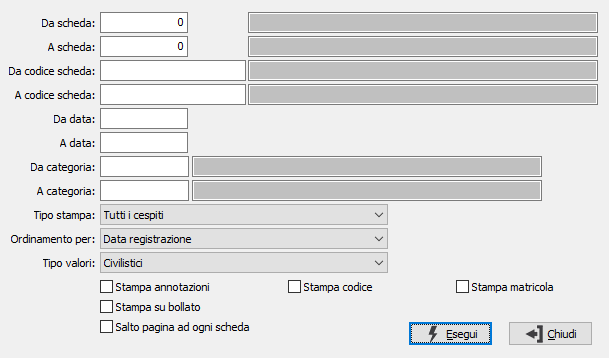

Stampa schede cespiti
Il programma consente di effettuare la stampa delle schede cespiti, in ciascuna delle quali vengono elencati i movimenti relativi al cespite in esame compresi nei limiti di data indicati dall'operatore.
La stampa può essere richiesta in qualsiasi momento di un esercizio, ma evidentemente non potrà contenere i movimenti relativi alle quote di ammortamento dell'ultimo esercizio se ancora generati dall'apposito programma di Generazione ammortamento fiscale.
È possibile richiedere la stampa completa, oppure per i soli cespiti dismessi, oppure per i soli cespiti attivi al momento della richiesta.

DA SCHEDA: indica il numero del cespite con cui iniziare la selezione. Sul campo sono attive le funzioni di ricerca (F9). L'utilizzo del numero cespite annulla quello del codice e viceversa.
A SCHEDA: indica il numero del cespite con cui terminare la selezione. Sul campo sono attive le funzioni di ricerca (F9). L'utilizzo del numero cespite annulla quello del codice e viceversa.
DA CODICE SCHEDA: indica il codice del cespite con cui iniziare la selezione. Sul campo sono attive le funzioni di ricerca (F9). L'utilizzo del numero cespite annulla quello del codice e viceversa.
A CODICE SCHEDA: indica il codice del cespite con cui terminare la selezione. Sul campo sono attive le funzioni di ricerca (F9). L'utilizzo del numero cespite annulla quello del codice e viceversa.
DA DATA: inserire la data da cui si desidera iniziare la selezione. Campo obbligatorio.
A DATA: inserire la data a cui si desidera terminare la selezione. Campo obbligatorio.
DA CATEGORIA: indicare il codice della categoria fiscale dal quale si desidera iniziare l’elaborazione. Sul campo sono attive le funzioni di ricerca (F9).
A CATEGORIA: indicare il codice della categoria fiscale alla quale si desidera terminare la stampa. Sul campo sono attive le funzioni di ricerca (F9).
TIPO STAMPA: definisce lo stato dei cespiti da selezionare. Valori ammessi: Tutti i cespiti; Esclude i cespiti dimessi; Solo i cespiti dimessi.
ORDINAMENTO PER: definisce il criterio di ordinamento dei dati. Valori ammessi: per data di registrazione o protocollo.
TIPO VALORI: il campo è presente solo se attiva la gestione degli ammortamenti fiscali e definisce se stampare i valori fiscali o civilistici.
STAMPA ANNOTAZIONI: definisce se deve essere stampato il contenuto del campo note (casella con segno di spunta).
STAMPA CODICE SCHEDA: definisce se deve essere stampato il codice del cespite (casella con segno di spunta).
STAMPA MATRICOLA: definisce se deve essere stampata la matricola del cespite (casella con segno di spunta).
STAMPA SU BOLLATO: indica se la stampa viene fatta sul bollato (non stampa l'intestazione) oppure no (stampa l'intestazione). La spunta indica la stampa sul bollato.
SALTO PAGINA AD OGNI SCHEDA: indica se stampare una scheda cespite per pagina (casella con segno di spunta).